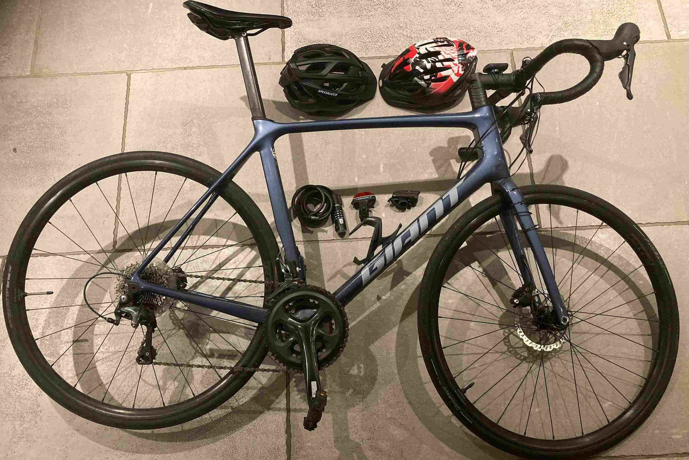

Welcome to Cycle Guernsey
Find out everything you need to know to become an amateur or professional cyclist on the island
Guernsey, a stunnning island in the English Channel, just north of France, is a place to explore like no other.
Famed for its natural beauty and tranquility, the secrets of the island are best discovered
cycling its many valleys, lanes, and seaside routes. Continue to our routes page,
below, to find out more about you can enjoy this wonderful paradise.

For keen cyclists moving to, or living on, the island there is equipment to satisfy all needs.
From top level racing bikes, to entry level machines, shops such as Ian Browns and Adventure
Cycles can provide everything you need. Some of the most important kit for any good cyclist is
reviewed on our equipment page below.